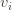
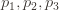
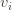
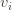
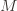
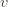
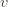

矩阵的奇异值分解（SVD）是计算机科学，数据分析和统计中的基本工具。它用于从回归到预测的各种应用程序，以及找到优化问题的近似解决方案。在这两篇文章的系列文章中，我们将激发，定义，计算并使用奇异值分解来分析某些数据。（跳到第二篇文章）
我想将第一篇文章完全花在动机和背景上。作为其一部分，我认为我们需要提醒一下线性代数如何消除线性子空间和矩阵。我之所以说“我认为”，是因为我要说的话似乎很少被详细阐明。确实，尽管我从数学的角度对线性代数有扎实的了解，但是当我第一次开始阅读应用于算法，机器学习和数据科学的线性代数时，我感到很困惑。令人关注的是矩阵之间作为转换的矩阵与矩阵之间作为组织数据的“便捷”方式的联系。
数据与地图
线性代数爱好者喜欢通过有关矩阵分解的陈述来表达深刻的事实 。也就是说，他们会说一些不透明的内容（这是我们将在文章中获得的关于SVD的完整声明）：
一个的SVD 


好的，我可以单独理解这些词，但是从整体上看这意味着什么？关于矩阵，似乎有两种看似矛盾的解释，这使我们的视线混乱了。
第一个是

只要组成的数据
在大多数情况下，人们谈论线性代数（甚至是数学家）时，他们将完全坚持线性映射透视图或数据透视图，这对您初次学习时会感到沮丧。数据透视图似乎只是一个整洁的便利，将某些数据放入表中“有意义”。以我的经验，奇异值分解是两种观点首次发生冲突，并且（至少在我的情况下）这与认知失调有关。
这两种想法相结合的方式是将数据视为由所指定的线性映射下的基向量的 图像。这是一个具体的例子。假设我想表达人们对电影的评价。每行将对应于一部电影的评级，每列将对应于一个人，矩阵的输入项是人对电影的评级。


实际上，它们的评级范围是1到5星，但为了简单起见，我们只能说评级可以是任何实数（它们只是选择整数）。因此，此矩阵表示线性图。域是 


现在， 数据集由表示
为什么这完全有帮助？这是我们开始看到线性代数的建模假设的地方。如果我们尝试使用此矩阵来说明人们对电影的评价方式（也许我们想预测一个新人如何评价这些电影），则我们需要能够将该人表示 为Aisha 的线性组合 ，鲍勃和钱德里卡。同样，如果我们有一部新电影，并且希望使用此矩阵来表达有关它的任何信息，则必须将这部电影表示为现有电影的线性组合。
当然，我并不是说电影（例如，包含电影的文件中的位）可以表示为其他电影的线性组合。我的意思是，我们可以将电影正式地表示 为某种抽象矢量空间中的线性组合，以完成当前的任务。换句话说，我们将电影的那些影响其收视率的特征抽象为矢量。我们没有合法的数学方法来理解这一点，因此向量是代理。
目前尚不清楚这对现实生活意味着什么，除了您可以希望（或假设或验证），如果电影的评级过程本质上是“线性的”，那么这种形式上的表现将准确地反映现实世界。就像物理学家都暗中知道数学并没有 真正 决定自然法则，因为人类在脑海中构筑了数学，而且如果您太刻薄地戳自然，数学就会崩溃，但是描述假设是如此的方便（等等）该死的准确），我们无法避免使用它来设计飞机。为此，我们没有找到比数学更好的东西。
同样，电影分级并不是字面上的线性图，但是如果我们假装成电影，我们可以制定算法来预测人们对电影的准确度。因此，如果您知道Skyfall分别从Aisha，Bob和Chandrika获得1,2和1的评级，那么新人将根据他们与这三个人的融合程度的线性组合来对Skyfall进行评级。换句话说，在此示例中，最多线性组合是Aisha，Bob和Chandrika代表电影评级过程的缩影。
现在我们要解决关键：通过SVD分解矩阵提供了一种替代的，更有用的方式来表示人们对电影进行评级的过程。 通过更改一个或两个向量空间的基础，我们隔离了过程的不同（正交）特征。在我们的电影示例的上下文中，“因式分解”是指以下内容：
- 拿出一个特殊的向量列表，
这样每部电影都可以写成线性组合。
- 做类似的事情让人们得到。
- 以这样的方式进行（1）和（2）：地图
同时相对于两个新基准是对角线。
 这样每部电影都可以写成线性组合。
这样每部电影都可以写成线性组合。有人可能会认为“理想化的电影”和

如果世界是逻辑的（我不是说是这样），那么可能

要完全清楚，奇异值分解 无法找到理想的科幻电影。奇异值分解的“理想”性是关于数据的固有几何结构以及线性假设的。这是否与人类对电影的分类有任何关系是一个单独的问题，答案几乎肯定是没有。
从这个角度来看，我们几乎准备讨论奇异值分解。我只想花一点时间写下一系列假设，以确保在给定电影收视率数据集的情况下，我们可以使用线性代数 对世界做出 确切的声明。
- 所有人都通过相同的线性图对电影评分。
- 每个人都可以被表达为“理想”人的线性组合（仅出于电影分级的目的）。电影也是如此。
- “理想化”的电影和人物可以表示为我们特定数据集中电影/人物的线性组合。
- 评级没有错误。
人们可能会对这些假设的哲学（或伦理或文化）方面进行深入而有趣的讨论。但是由于互联网更喜欢观看有礼貌的话语，因此我们将转向算法。
近似子空间
在我们当前的上下文中，奇异值分解（SVD）并不是要像我们上面所说的那样在新的基础上完整地描述映射。相反，我们希望使用它来 通过低维线性事物近似 映射
我们怎么知道那
但是，我们不需要了解多种方法来理解SVD。对于我们对电影进行人物评分的示例，完整级别的属性应该显而易见。人类偏好中的噪声，随机性和任意性无疑破坏了我们希望找到的任何“完美”线性结构，特别是这意味着数据集本身（即的图像
找出低阶近似值可以认为是“消除”了数据中的噪声。当基础过程接近线性图时，此方法特别有效 。即，当数据 接近完全包含在相对低维度的单个子空间中时。思考为什么会这样的一种方法是，如果您正在观察的过程确实是线性的，但是您获得的数据却被少量的噪声破坏了。然后
根据我们之前关于何时可以使用线性代数解决问题的假设列表，对于SVD，我们可以在前三个假设中“近似”添加，在第四个假设中“附加太多错误”。如果这些假设成立，SVD将为我们提供一个矩阵
更具体地与符号中，如果

就直觉地了解什么是SVD就是这样。我应该补充一点，SVD 不仅 允许人们计算等级
直觉的第二点如下。它仅比严格度稍高一点，但是以某种方式，这种小见解确实使SVD亲自为我点击：
SVD是您迭代解决将数据拟合到行的贪婪优化问题时得到的结果。
我的意思是，您可以通过执行以下操作来计算SVD：
- 最适合我的数据的线是什么？
- 好吧，忽略第一行，下一个最佳行是什么？
- 好吧，忽略前两行范围内的所有行，下一条最佳行是什么？
- 忽略前三行中的所有行，下一条最佳行是什么？
- （重复）
这行事令人震惊。对于大多数问题，在数学和生活中，贪婪算法远非最优。当发生这种情况时，贪婪算法是解决自然问题的 最佳解决方案（并非每次如此，也并非如此），这是我们的智力义务，它是要停止我们正在做的事情，坐直并坐下来，非常了解并欣赏它。这些奇迹超越了政治争论和体育成绩。然后，我们将深入研究这个贪婪的优化问题，以立即开始下一篇文章。
几何透视
我想在这里讨论另外两种观点，尽管对于不熟悉SVD的读者来说，在本书续篇之后等待阅读是比较合适的。我将把我的理解（就贪婪算法和数据近似而言）与SVD的几何和统计观点联系起来。
迈克尔·尼尔森（Michael Nielsen）写了一篇冗长而详尽的文章 提出一些有关思考数学的“新媒介”的想法。他通过查看2×2矩阵的奇异值分解来证明框架。他对SVD背后的直觉的解释是，您可以采用任何矩阵（线性映射）并将其分解为三部分：围绕原点旋转，重新调整每个坐标的缩放比例，以及随后围绕原点进行另一旋转。尽管我对尼尔森（Nielsen）致以最大的敬意（他的量子力学著作是该领域最好的书），但这种解释从未使我个人对SVD产生兴趣。似乎将不透明的SVD定义（作为矩阵分解）重新声明为几何术语。实际上，正交矩阵是旋转，对角矩阵是每个坐标的缩放。
对我来说，这种解释所缺少的关键是对近似的强调。使得SVD如此神奇的并不是首先存在因式分解，而是SVD具有越来越好近似的这些层次。尽管术语将在下一篇文章中介绍，但这些层是（有序的）奇异向量和奇异值。而且，构造这些层的算法过程必须按照从最强近似到最弱的顺序进行。
另一个几何立体，突出这是该秩
下次：算法
下次，我们将所有这些与正式定义和严谨性联系起来。我们将研究贪婪算法方法，然后实现SVD并在一些数据上对其进行测试。
直到那时！


矩阵的域基础图像是线性的，还是更正确的仿射？如果它是超排队的几个点的近似值，那么我想它是仿射的。我发表评论是因为我在博客中提出了一种不同的方式来考虑这些近似值。问题是找到靠近点的（超）平面。将这些点重新解释为平面，找到那些平面所包围的区域，找到该区域顶点的平均值，然后将其解释为（超）平面。您的方法虽然更有条理。
Like喜欢
我认为转型不是仿射的？没有平移，只有旋转和缩放。
Like喜欢
每个线性空间都归纳出一类仿射空间。特别是考虑通过原点的平面与稍微偏离原点的平面的交点。
Like喜欢
有关“满级”的问题-A矩阵为8×3，因此不是其最大＃lin ind。行或列3？完整排名是不是意味着这个最大值或更多？例如，如果有1000部电影，但仍然有3个人，则有一个R ^ 3的人空间，但是R ^ 1000个具有线性组合的R ^ 3子空间的电影空间？感谢您的博客文章！
Like喜欢
我也可以从AMS强烈推荐此功能列：http : //www.ams.org/samplings/feature-column/fcarc-svd。当我第一次尝试理解SVD时，我发现它真的很有帮助
Like被2人顶了
例如，如果您只有三列并且要使用SVD，则Universe必须是3维的。例如，厨师可以使用一些食材作为圆柱，但是您需要很多食材才能制作出美味的菜肴。我要强调的是，您的行和列必须足够大以描述论述的范围，一般性观点，或者能够近似于您正在建模的现实。SVD给您的是一个特殊的基础，一群厨师能够设计您想要的风味。我认为动机应该沿着这条路线，第一个问题是关于您的基础的表达能力。
Like喜欢
SVD可以用一种非常酷的方式来说明“等级”的概念：作为熵。
1）创建一个20×100的随机数矩阵
2）运行SVD。奇异值应为20个几乎完全相等的数字。
3）将矩阵本身相乘以创建100×100矩阵
4）在此上运行SVD
您应该得到一个奇异矢量，其中包含20个几乎完全相同的值和80个非常小的值。您的20×100矩阵几乎具有最高等级。您的100×100矩阵只有20×100的等级，像气球一样膨胀。
熵排名。
Like喜欢
我一直在寻找这样的文章已有很长时间了，这对您有很大帮助，非常感谢！
但是，我很难理解如何将某些数据集解释为线性映射。例如：
1）您如何将矩阵表示的数字图像解释为线性图？
2）您如何解释其行号和列号表示位置索引（x_i，y_k）的数据矩阵，并将矩阵元素表示为其取值？M_ik = f（x_i，y_k）
Like喜欢
在某种程度上，您的问题的两个答案都只是“将任何矩阵解释为线性图的方式相同.php "F") ”，即通过为每个行/列使用一个基向量，并用基向量索引的每一列来表示扩展
”，即通过为每个行/列使用一个基向量，并用基向量索引的每一列来表示扩展.php "f（v）") 为行基向量的线性组合。
为行基向量的线性组合。
对于您的两个示例，这不是一个“不错”的答案，因为结构域和共域的基本向量的选择是人为设计的。但是，对于图像来说，这就是世界运作的方式。对于线性代数来说，标准表示不是一个非常有用的表示。因此，人们开始研究如何选择更好的基础，最终他们得到诸如傅立叶变换之类的东西以及所有这些可爱的东西。我认为线性代数的适用性很大一部分取决于选择的优先程度，这些选择首先使您获得了数据。
Like喜欢